all transients in sector33 (24 total)
Each figure has three panels. The top panel shows the transient light curve, the middle panel shows the local background (estimated in an annulus), and the bottom panel shows a "background-model corrected" light curve. Details about the background model are in the README.
The vertical red line marks the time of discovery reported to TNS. Other useful metadata from TNS is in the figure title.
Note that the top and bottom panel are in magnitudes, while the middle panel is in differential flux units. The magnitudes are calibrated to the flux in the reference image used for image subtraction. Thus, flux from the host galaxy is included in these magnitudes.
3-sigma upper limits are plotted as triangles with no errorbars. A typical limiting magnitude is 19.6 in 30 minutes or 18.4 in 200 seconds (for low backgrounds).
The links allow you to download the light curve data as a text file.
More details in the README.
2021nf 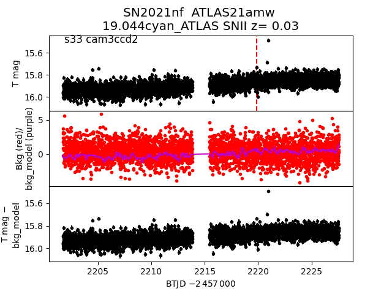 2021pf 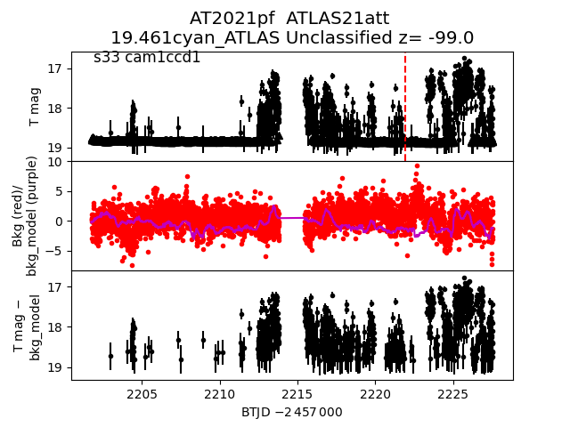 2021ho 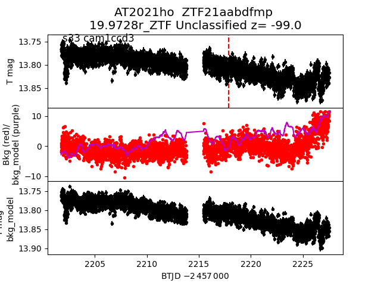 2021dv 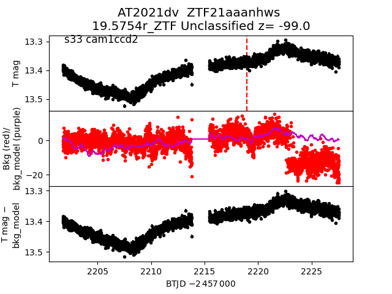 2021jt 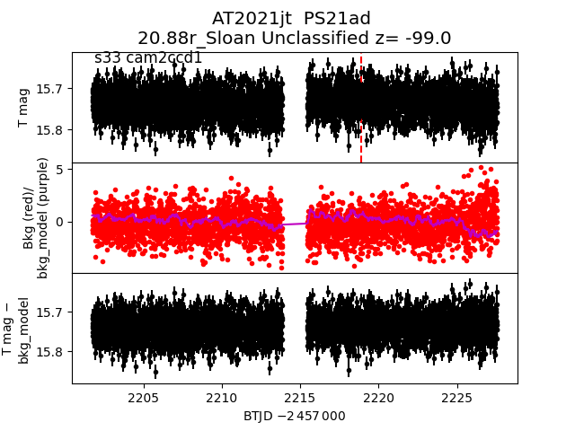 2020adgf 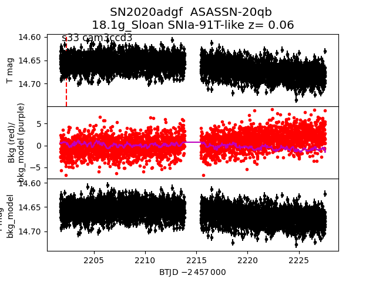 2021adr 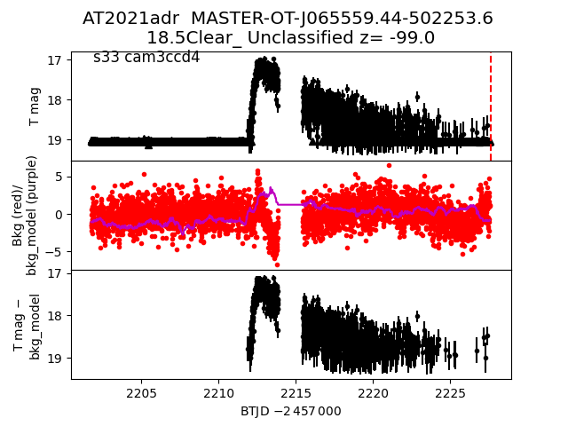 2021zf 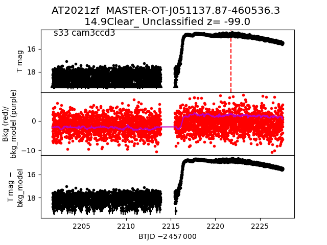 2021hi 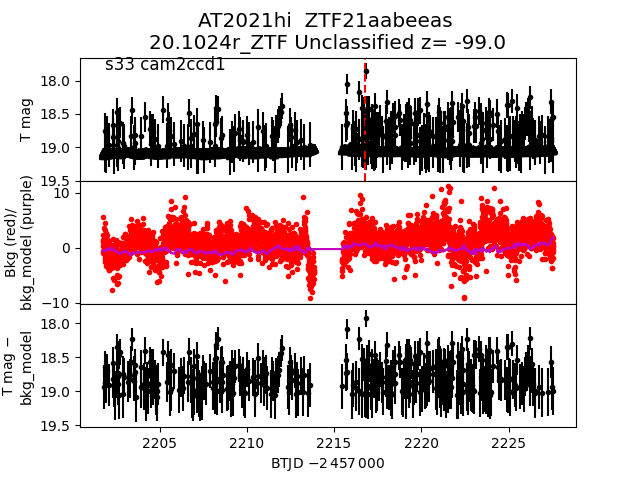 2021ahq 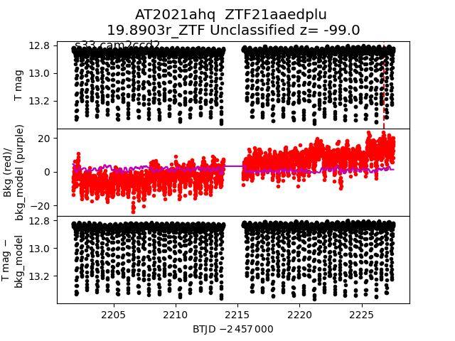 2021zr 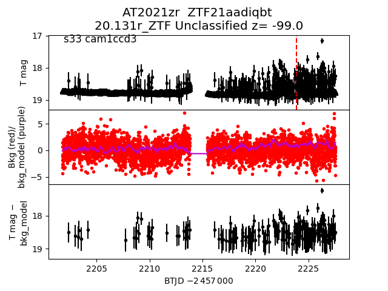 2021pg 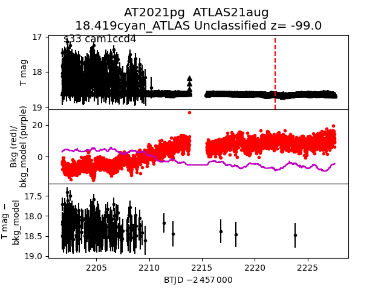 2021zd 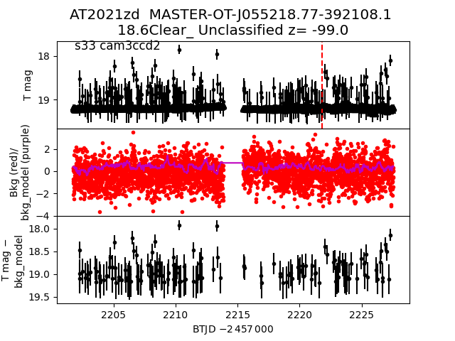 2021aaa 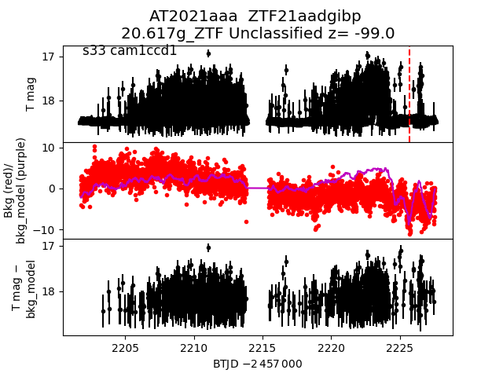 2020adsx 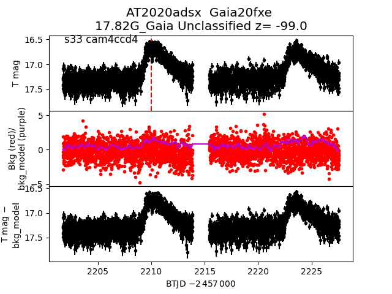 2020aedx 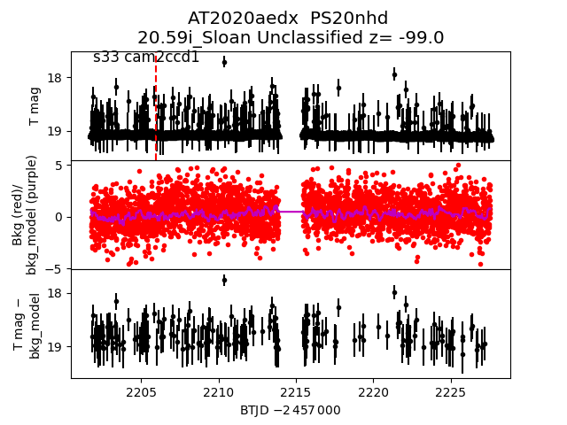 2021tj 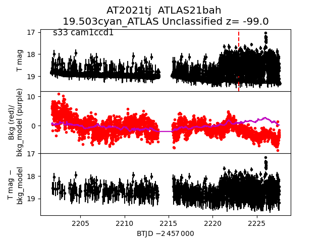 2021ph 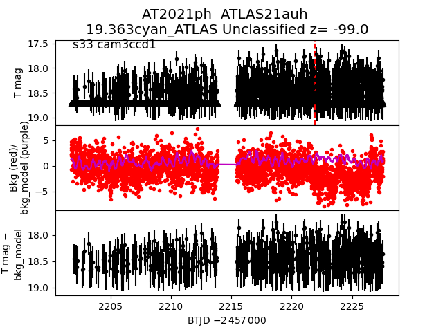 2020adkr 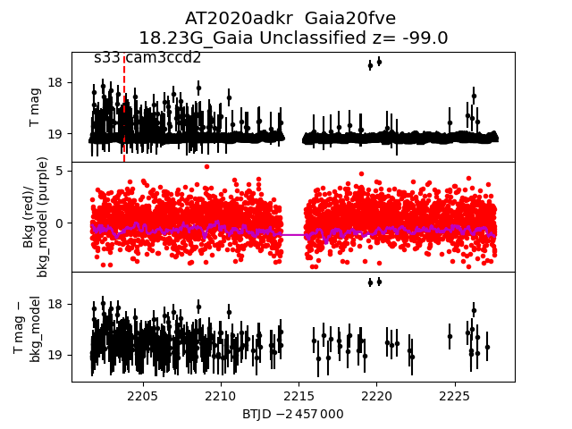 2020aebg 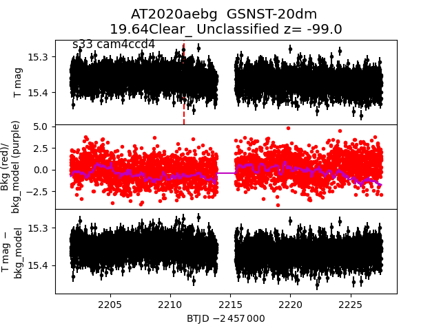 2020aelf 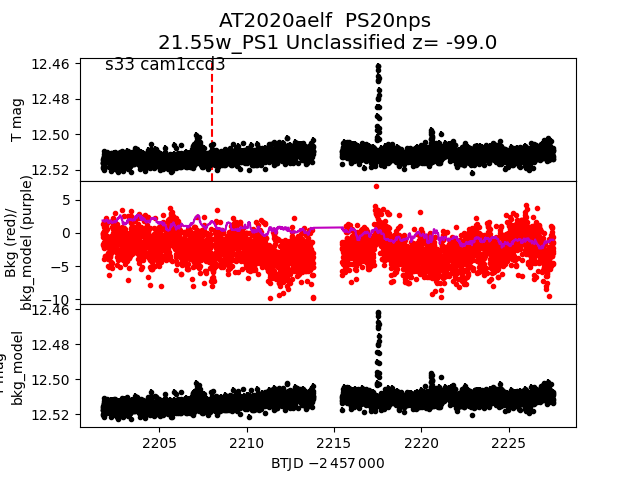 2020adjd 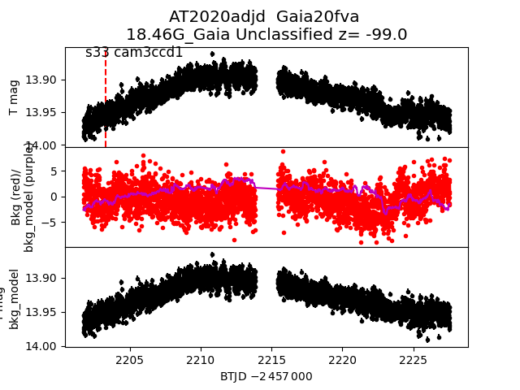 2021ayb 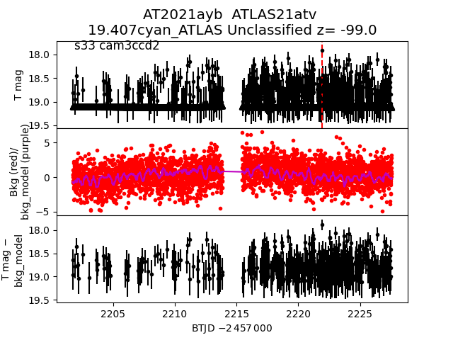 2021ju 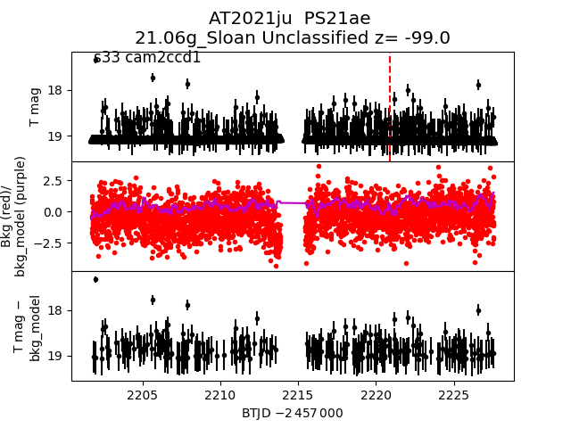